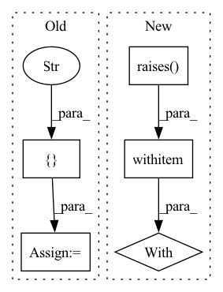

Pattern ID :4729
Before Change
Ensure ZenML fails when the given path is not a git repository
runner = CliRunner()
zen_fake_repo_path = tmp_path / ZENML_DIR_NAME
result = runner.invoke(init, ["--repo_path" , str(zen_fake_repo_path)After Change
def test_init_raises_error_when_repo_not_git_repo(tmp_path: Path) -> None:
Ensure ZenML fails when the given path is not a git repository
zen_fake_repo_path = tmp_path / ZENML_DIR_NAME
with pytest .raises(Exception):
cli.init(str(zen_fake_repo_path))
In pattern: SUPERPATTERN
Frequency: 3
Non-data size: 5
Instances Fragment ID: 16787696
Project Name: maiot-io/zenml
Commit Name: d68649a7ba1c291caace9a35e775ac777d702d3c
Time: 2021-11-04
Author: strickvl@users.noreply.github.com
File Name: tests/cli/test_base.py
M Class Name: AnonimousClass
N Class Name: AnonimousClass
M Method Name: test_init_raises_error_when_repo_not_git_repo(1)
N Method Name: test_init_raises_error_when_repo_not_git_repo(1)
M Parent Class:
N Parent Class:
M File Name: tests/cli/test_base.py
N File Name: tests/cli/test_base.py
M Start Line: 37
M End Line: 40
N Start Line: 47
N End Line: 49
Before Change
// ----------------------------------------------------------------------------------
// test word preprocessor strip_punctuation:
WORDS = [
"??man!!" ,
"woma+n" + string.punctuationAfter Change
model = WordEmbeddingModel(w2v, "weat_w2v", "")
WORDS = ["man", "woman"]
with pytest .raises(TypeError, match="word_set should be a list of strings, got"):
model.get_embeddings_from_word_set(None, preprocessor_options=1)
with pytest.raises(
TypeError, Fragment ID: 16787697
Project Name: dccuchile/wefe
Commit Name: 702ae43a1024a79eb8570e43996113f9ac785afa
Time: 2020-11-16
Author: pablo.badilla@ug.uchile.cl
File Name: wefe/tests/test_word_embedding_model.py
M Class Name: AnonimousClass
N Class Name: AnonimousClass
M Method Name: test_get_embeddings_from_word_set(0)
N Method Name: test_get_embeddings_from_word_set(0)
M Parent Class:
N Parent Class:
M File Name: wefe/tests/test_word_embedding_model.py
N File Name: wefe/tests/test_word_embedding_model.py
M Start Line: 223
M End Line: 237
N Start Line: 170
N End Line: 191
Before Change
def test_surface_native_error():
cmd = ["python3" , utils.fixtures_path("tf_keras_runtime_error.py")After Change
make_workloads(),
trial_seed=0,
)
with pytest .raises(ValueError, match="incompatible"):
controller.run()
Fragment ID: 16787690
Project Name: determined-ai/determined
Commit Name: e7f3289627bda514dc6e70183def0a8ee282f327
Time: 2022-05-03
Author: rb@hpe.com
File Name: harness/tests/experiment/keras/test_tf_keras_trial.py
M Class Name: AnonimousClass
N Class Name: AnonimousClass
M Method Name: test_surface_native_error(0)
N Method Name: test_surface_native_error(0)
M Parent Class:
N Parent Class:
M File Name: harness/tests/experiment/keras/test_tf_keras_trial.py
N File Name: harness/tests/experiment/keras/test_tf_keras_trial.py
M Start Line: 373
M End Line: 390
N Start Line: 379
N End Line: 386